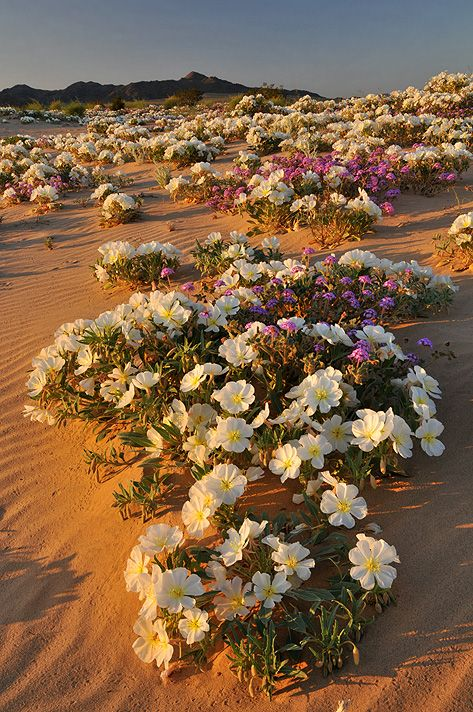
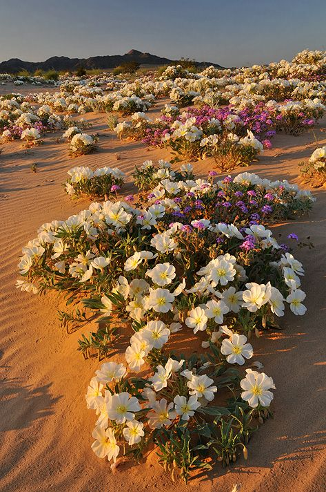
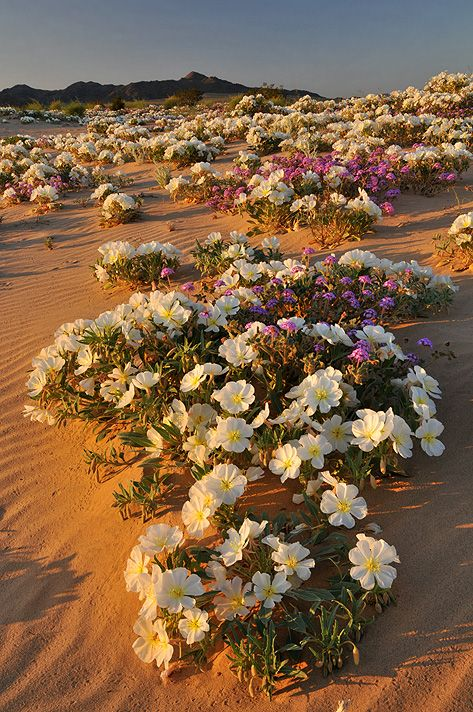

Deserts cover about one fifth of the Earth's
surface and occur where rainfall is less than 50 cm/year.
Although most deserts, such as the Sahara of North Africa and
the deserts of the southwestern U.S., Mexico, and Australia,
occur at low latitudes, another kind of desert, cold deserts,
occur in the basin and range area of Utah and Nevada and in
parts of western Asia.
Most deserts have a considerable amount of
specialized vegetation, as well as specialized vertebrate and
invertebrate animals. Soils often have abundant nutrients
because they need only water to become very productive and have
little or no organic matter. Disturbances are common in the form
of occasional fires or cold weather, and sudden, infrequent, but
intense rains that cause flooding. There are relatively few
large mammals in deserts because most are not capable of storing
sufficient water and withstanding the heat. Deserts often
provide little shelter from the sun for large animals. The
dominant animals of warm deserts are nonmammalian vertebrates,
such as reptiles. Mammals are usually small, like the kangaroo
mice of North American deserts. Desert biomes can be classified
according to several characteristics.
Deserts experience extreme shortages of
water due to lack of precipitation. The primary characteristic
of deserts is that they are dry.
Deserts are commonly defined as areas that
receive less than 10 in (250 mm) of rain annually. There are
records of deserts going without rain for hundreds of years, for
example, the Atacama Desert in Chile. However, most deserts do
receive rain, even if only for a few days each year.
Desert rainfall is usually unpredictable. As
a result desert animals and plants cannot rely on the presence
of moisture for their growing or reproductive seasons they must
first wait for rain to arrive before completing their life
cycles. In addition, rainfall in deserts often comes in
downpours. This causes flooding before the water is lost into
the sandy soil.
The air is dry in deserts, and clouds do not
form; therefore, clear skies are also a characteristic of
deserts. The cloudless skies allow much of the suns radiation to
reach the ground, leading to very high daytime temperatures.
Similarly, once the sun sets in a desert, the warmth is quickly
radiated away into the atmosphere as there are no clouds to trap
it. This causes very low temperatures at night. Desert plants
and animals must be able to tolerate extremes of both heat and
cold.
Deserts are also characterized by having
plants that grow very slowly. The process of photosynthesis (in
which plants use the suns energy to make food for growth)
requires water. Because water is in short supply, plant
production in deserts is the lowest of any biome on
earth.Deserts have formed all over the world where moisture is
scarce and unpredictable. The extent and cause of the aridity
varies, and this means that no single definition fully describes
the conditions in all deserts.
Subtropical deserts are very hot and dry.
They occur at low latitudes, to the south and north of the
equator. The dry conditions are caused by patterns of
atmospheric circulation that start over equatorial regions.
Temperate deserts, also known as cold
deserts, occur at higher latitudes and therefore have cooler
temperatures. Their aridity is caused by being far from the
ocean or from being close to high mountains that prevent moist
air from reaching inland.
